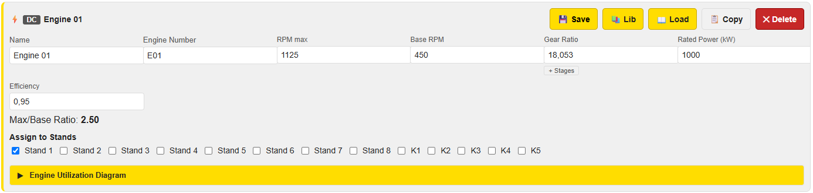
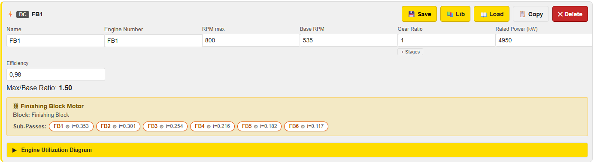
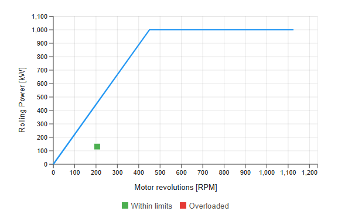
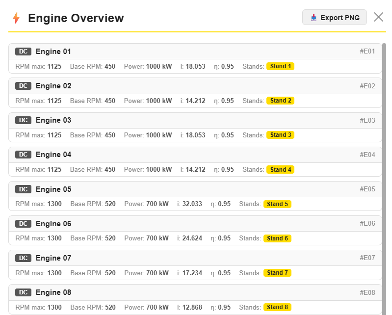
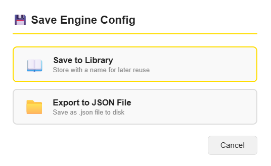
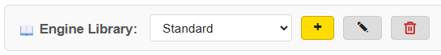
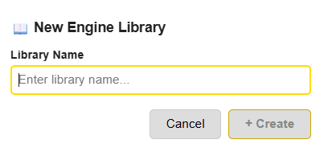
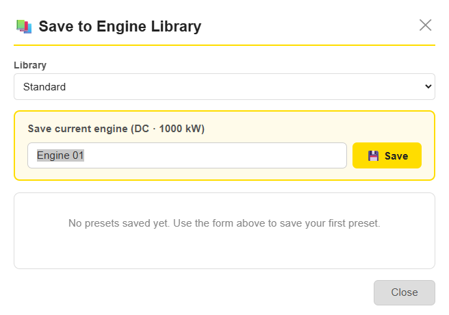
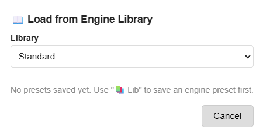

PyRoll GUI | Date: June 2026
The Engine Configuration tab defines the drive motors for each rolling stand. Every engine specifies its power characteristics, gear ratio, and efficiency. After a simulation run the tab also shows where each motor operates relative to its rated limit — making it the central tool for drive dimensioning.
Each engine is represented by an Engine Card. Cards are listed vertically and can be freely reordered by dragging. Multiple engines can be configured independently; each engine can be assigned to one or more stands.
Engine configurations are saved as part of the project file
(Ctrl+S). Individual engines can also be stored in the
Engine Library for reuse across projects.
Each engine is displayed as a collapsible card. The card header shows the motor type badge, the engine name, and the action buttons.

An orange border and the label ● Unsaved in the header indicate that the card has been edited but not yet saved to the project. Click 💾 Save or use Save Config (top bar) to persist all unsaved changes at once.
If the engine is the drive for a Finishing Block, the Assign to Stands section is replaced by a read-only Finishing Block Motor panel showing the block label and the individual sub-pass gear ratios.

Select the motor technology via the Motor Type field in the card. The type is shown as a coloured badge in the card header:
| Badge | Type | Characteristics |
|---|---|---|
| DC | Direct Current motor | Classic rolling-mill drive. Speed-torque range is described by Base RPM (rated point) and RPM max (field weakening limit). Below Base RPM the motor operates in constant-torque mode; above Base RPM in constant-power (field-weakening) mode. Power curve is a horizontal line from Base RPM to RPM max. |
| AC | Alternating Current / frequency-inverter motor | Modern variable-frequency drive. The rated operating point is called Rated RPM (replaces Base RPM in the label). An additional Power Factor (cos φ) field appears, which is used to convert the apparent electrical power to mechanical shaft power. The speed range above Rated RPM may be limited depending on inverter settings. |
Below the input fields PyRoll GUI displays the calculated ratio Max/Base Ratio = RPM max / Base RPM. This is the speed range factor of the field-weakening zone. A typical DC rolling-mill motor has a ratio between 2.0 and 3.5. If RPM max ≤ Base RPM a red warning is shown.
All parameters are entered directly in the Engine Card. Edits are immediately reflected in the Utilization Diagram.
| Parameter | Unit | Description |
|---|---|---|
| Name | — | Descriptive name shown in the card header and Engine Overview (e.g. Engine 01) |
| Engine Number | — | Short identifier / tag used in reports (e.g. E01) |
| RPM max | rpm | Maximum allowable motor speed (top of the field-weakening range for DC; inverter limit for AC) |
| Base RPM (DC) / Rated RPM (AC) | rpm | Speed at the rated operating point — transition between constant-torque and constant-power zones |
| Power Factor cos φ | — | AC only. Ratio of active to apparent power (typical: 0.85–0.95) |
| Gear Ratio | — | Overall gear ratio between motor shaft and roll: i = n_motor / n_roll. A higher gear ratio means the motor rotates faster than the roll. |
| Rated Power | kW | Continuous rated shaft power at the rated RPM point |
| Efficiency η | — | Mechanical drive-train efficiency (gearbox + coupling losses). Typical: 0.90–0.97. The required motor power is divided by η to obtain the actual motor demand. |
18,053) are accepted in all
numeric fields — the comma is automatically converted to a decimal point.
The Assign to Stands section appears at the bottom of the card (unless the engine drives a Finishing Block). A row of checkboxes lists all currently defined stands. Check every stand that this motor drives.
One stand can be assigned to at most one engine. Assigning a stand that is already assigned to another engine removes the assignment from the previous engine automatically when the project is next saved.
Stand names (e.g. Stand 1, K1) are taken directly from the Pass Design tab. Adding or renaming stands in the Pass Design tab automatically updates the checkbox list here.
The yellow ▶ Engine Utilization Diagram bar at the bottom of each card is a collapsible panel. Click it to expand or collapse the plot.

The diagram shows:
The operating points are only shown after a successful simulation run. If no results are available, the diagram displays the limit curve only.
Each Engine Card has four action buttons in the top-right corner:
| Button | Action |
|---|---|
| 💾 Save | Saves the current card state to the project (same as Save Config → Save All). Clears the orange unsaved indicator. |
| 📚 Lib | Opens the Save to Engine Library modal — stores the engine as a named preset for reuse. See Section 12. |
| 📖 Load | Opens the Load from Engine Library modal — replaces the current card parameters with a saved preset. See Section 13. |
| 📋 Copy | Creates a duplicate of the engine as a new card at the end of the list. All parameters are copied; stand assignments are not copied (to avoid double-assignment). |
| ✕ Delete | Permanently removes the engine after a confirmation prompt. Stand assignments for this engine are automatically released. |
Engine Cards can be reordered freely by dragging them to a new position in the list. To drag a card, click and hold anywhere on the card header (the title bar with the engine name and buttons), then move it up or down.
While dragging, the target position is highlighted. Release the mouse button to drop the card at the new position. The order is reflected immediately in the Engine Overview and affects the order of engines in exported JSON files.
The ⚡ Engine Overview button in the top bar of the Engine Configuration tab opens a compact summary of all configured engines.

For each engine the overview shows:
The overview is read-only. Use the Export PNG button in the top-right corner to save the overview as a PNG image for documentation.
The top bar of the Engine Configuration tab contains two buttons for exchanging the complete engine configuration independently of the full project file:

| Button | Dialog options |
|---|---|
| 💾 Save Config |
|
| 📂 Load Config |
|
Ctrl+S) always includes the engine configuration.
Use Save/Load Config only when you need to transfer engines independently
of the pass schedule or in-profile settings.
At the top of the Engine Configuration tab a compact toolbar manages the available Engine Libraries:

| Control | Function |
|---|---|
| Library drop-down | Selects the active library. All Lib and Load actions on individual cards default to this library. |
| + | Creates a new library. A dialog prompts for a name. |
| ✏ | Renames the currently selected library. |
| 🗑 | Deletes the selected library and all its presets. Only available when the library is not the last one. |

Click 📚 Lib on any Engine Card to open the Save to Engine Library modal.

← Use button — the name is filled into the input.The list at the bottom of the modal shows all presets in the selected library with motor type, power, and efficiency for quick identification.
Click 📖 Load on any Engine Card to open the Load from Engine Library modal.

Load — the engine card parameters are replaced immediately and saved to the project.Stand assignments stored in the preset are validated against the current pass design. If a stand no longer exists it is silently dropped from the assignment list.
Michael Molter | PyRoll GUI – Engine Configuration Guide